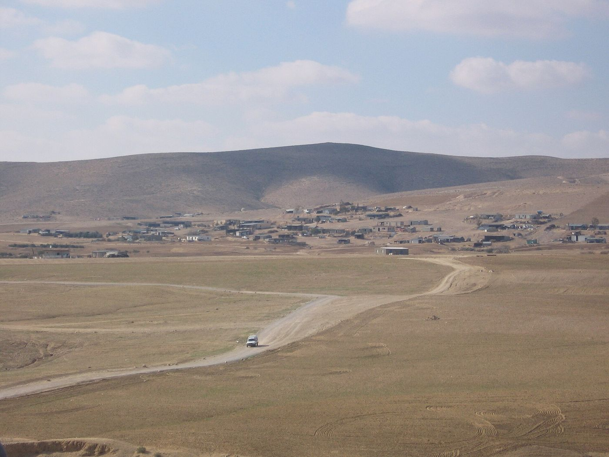
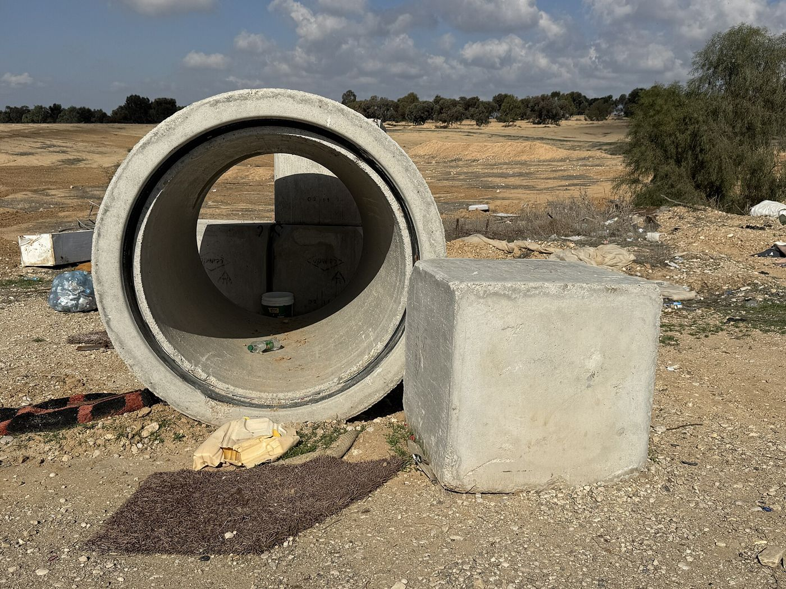

Von den Beduinen des Naqab – so heißt der Negev auf Arabisch – blieben nach 1948 nur rund 11.000; der Staat konzentrierte sie bis 1966 unter Militärverwaltung auf etwa einem Zehntel ihres Landes. Heute leben im Negev rund 315.000 bis 325.000 Beduinen, israelische Staatsbürger. 70.000 bis 90.000 von ihnen wohnen in 35 Dörfern, die der Staat nicht anerkennt: ohne Strom-, Wasser- und Abwasseranschluss, jedes Haus gilt als illegal. Die Abrisse haben sich seit 2013 mehr als versiebenfacht; seit Mitte 2024 untersteht die zuständige Behörde dem Minister für Nationale Sicherheit Itamar Ben-Gvir, seither werden ganze Dörfer geräumt. Der Staat verweist auf Staatsland, Planungsrecht und milliardenschwere Entwicklungsprogramme.
Kurzfassung im Gesetzeskapitel: Gesetze – der Anwendungsfall Negev · Übersicht: Palästinenser in Israel · Vorgeschichte: Nakba 1948 · Wer die Palästinenser sind: Herkunft.
Von der Vertreibung in den „Siyag“
Was 1948 begann, bestimmt bis heute, wo die Beduinen des Naqab wohnen dürfen.
Im Naqab leben nach Schätzungen 65.000 bis 100.000 Beduinen (NCF, Abrissbericht 2021–2022, S. 7; NCF, Dez. 2024, Kap. 1.1).
Die meisten werden vertrieben oder fliehen nach Gaza, Ägypten, ins Westjordanland und nach Jordanien; nur etwa 11.000 bleiben (NCF). → Nakba
Militärverwaltung über die palästinensischen Bürger Israels, einschließlich der Beduinen. Ab Anfang der 1950er-Jahre konzentriert der Staat die verbliebenen Beduinen im Siyag (arabisch al-Siyāj), einem Sperrgebiet nordöstlich von Beerscheba, das nur etwa 10 % ihrer traditionellen Ländereien umfasst; ganze Dörfer aus dem westlichen und nördlichen Naqab werden dorthin umgesetzt (NCF 2021–22, S. 7).
Die Militärverwaltung ordnet für al-Araqib eine „vorübergehende“ Räumung für sechs Monate an – wegen Armeeübungen. Die Rückkehr wird danach verweigert (NCF-Dorfseite).
Das Militär verlegt den Stamm Abu al-Qiyan von Khirbet Zubaleh an den Ort, der später Umm al-Hiran heißt (Adalah zum Urteil 3094/11).
Planungs- und Baugesetz (amtliche englische Übersetzung): Dörfer, die in keinem Bebauungsplan stehen, können keine Baugenehmigung erhalten – dort gilt jedes Haus als illegal.
Beduinen reichen Eigentumsansprüche auf ihr Land ein, im Fall al-Araqib beim zuständigen Siedlungsbeamten (NCF). Gerichte verneinen solche Ansprüche meist mit der Lehre vom „toten Land“ (mawat) nach osmanischem und britischem Recht – grundlegend das Urteil al-Hawashlah 1984 (pressevermittelt). Parallel entstehen staatlich geplante Städte; heute sind es sieben, darunter Rahat, Tel Sheva und Hura.
Human Rights Watch untersucht 13 nicht anerkannte Dörfer und drei Städte. Befund: Land- und Planungspolitik mache legales Bauen für Beduinen fast unmöglich, während illegales Bauen jüdischer Bürger oft nachträglich legalisiert werde; HRW fordert ein sofortiges Abrissmoratorium („Off the Map“).
Landklage al-Uqbi: Das Oberste Gericht weist die Berufung der Familie al-Uqbi u. a. (Zivilberufung 4220/12) gegen ein Urteil des Bezirksgerichts Beerscheba ab. Rund 1.000 Dunam bei al-Araqib gelten als „totes Land“ und damit als Staatsland; die Enteignung der 1950er-Jahre bleibt bestehen (pressevermittelt, +972 Magazine).
35 Dörfer, die es offiziell nicht gibt
72 % der Negev-Beduinen leben in 18 anerkannten Orten – sieben Städten und elf bis zwölf Dörfern. Die übrigen 28 % leben außerhalb: nach dem Staatskontrolleur 70.000 bis 90.000 Menschen, nach dem Negev Coexistence Forum und Adalah rund 100.000 (Staatskontrolleur, April 2026; NCF 2021–22, S. 6). Die meisten von ihnen wohnen in den 35 nicht anerkannten Dörfern, die zusammen etwa 350.000 Dunam umfassen – 2,7 % der Fläche des Negev (ACRI).

- 1Keine Netze: kein Anschluss an Strom-, Wasser- und Abwassernetz, keine Müllabfuhr; Strom meist aus selbst installierten Solaranlagen (NCF 2021–22, S. 7; NCF, Dez. 2024, Kap. 2.2).
- 2Kaum Versorgung: In den 35 Dörfern gibt es nur vier Kliniken; die meisten haben keine Schulen oder Gesundheitseinrichtungen. Eine gewählte Gemeindevertretung fehlt – es gibt nur den informellen Regionalrat der nicht anerkannten Dörfer (RCUV).
- 3Armut: 2018 lebten 72,9 % der Naqab-Beduinen und 79,6 % ihrer Kinder unter der Armutsgrenze (Nationale Versicherungsanstalt, nach NCF) – die Bewohner der nicht anerkannten Dörfer sind in dieser Statistik nicht einmal erfasst.
- 4Jedes Haus illegal: Weil die Dörfer in keinem Bebauungsplan stehen, gibt es keine Baugenehmigung – und jedes neue Haus, jeder Stall kann eine Abrissverfügung erhalten.
Im Krieg ohne Schutzraum
Nach einer Umfrage der NCF-Forschungsstelle Nagabiya (November 2023) haben 67 % aller Beduinen keinen Zugang zu einem geschützten Raum; in den nicht anerkannten Dörfern erreichen 92 % bei Raketenalarm keinen Schutzraum, in den Städten 43 % (Studie). Sirenen fehlen fast überall; die staatlichen Notmaßnahmen von 2023 – Schutzwälle und Betonröhren – deckten nach NCF nur einen Bruchteil ab. Am 7. Oktober 2023 starben in Beduinengebieten in den ersten Stunden sieben Menschen durch Raketen, sechs davon Kinder (NCF, Dez. 2024); insgesamt wurden nach Presseangaben 17 bis 21 Beduinen durch die Hamas und durch Raketen getötet und mehrere verschleppt (pressevermittelt, Davar). Beim iranischen Raketenangriff im April 2024 wurde als einzige schwer verletzt die siebenjährige Amina al-Hasouni im nicht anerkannten Dorf al-Fura'a (NCF-Wirkungsbericht 2024). Eine Petition des NCF und anderer Organisationen auf Schutzräume wies das Oberste Gericht ab.

Mehr als versiebenfacht: Abrisse 2013 bis 2025
Die Zahlen stammen aus den Jahresberichten der zuständigen Behörden – bis 2024 der Südverwaltung zur Durchsetzung der Bodengesetze, seither der Nationalen Einheit zur Durchsetzung der Planungs- und Baugesetze –, die das Negev Coexistence Forum per Informationsfreiheitsanfrage erhält und auswertet.
Abgerissene Strukturen in Beduinengebieten des Negev pro Jahr. Gezählt werden Bauten jeder Art – Wohnhäuser, Ställe, Zelte, Pferche –, nicht nur Wohnhäuser. 2013: Negev Coexistence Forum (NCF), Abrissbericht 2021–2022, S. 12; 2014–2023: NCF-Infografik 2023; 2021/22 mit Selbstabriss-Anteil: NCF-Bericht 2021–2022, S. 14–15 (Anteil 2022 aus 2.850 minus 448 behördlichen Abrissen errechnet); 2024: 5.187 laut NCF-Wirkungsbericht 2024, 5.231 laut NCF Dez. 2025 nach Ministeriumsangaben – daher „rund 5.200“; 2025: Zahl des Ministeriums für Nationale Sicherheit, pressevermittelt über das +972 Magazine, ein Primärbeleg steht noch aus. Für 2023 bis 2025 ist der Selbstabriss-Anteil nicht belegt.
Der größte Teil der Abrisse wird von den Familien selbst ausgeführt: 2021 waren es 2.591 von 3.004 (86 %), nur 413 rissen die Behörden ab. Von 2013 bis 2022 zählte das NCF rund 18.500 abgerissene Strukturen, davon 13.081 Selbstabrisse. Der Grund laut NCF: Wer nach einer Abrissverfügung nicht selbst abreißt, muss die hohen staatlichen Abrisskosten und Bußgelder tragen. Ein „freiwilliger“ Abriss im üblichen Sinn ist das nicht.
Die Zahl der Abrissverfügungen stieg von 1.874 (2022) auf 2.147 (2023), im ersten Halbjahr 2025 noch einmal um 43,7 % (NCF, Dez. 2025). Das NCF verweist auf ein seit 2023 eingesetztes automatisches Erkennungssystem der Firma Rafael. Seit 2023 wurden insgesamt mehr als 14.000 Strukturen abgerissen (Adalah, 31.3.2026).
Wohnhäuser im engeren Sinn: 451 (2021), 380 (2022) laut NCF; 2025 nach Ministeriumsangaben über 1.000 (pressevermittelt).
Die Fälle und wie sie ausgingen
| Fall | Was geschah – wer handelte | Ausgang |
|---|---|---|
| al-Araqib Abrisse seit 2010 | Dorf aus osmanischer Zeit, Friedhof seit 1914; 1953 von der Militärverwaltung „vorübergehend“ geräumt. Seit dem 27.7.2010 reißen die Behörden die Hütten der zurückgekehrten Bewohner immer wieder ab; der Staat verklagte die Bewohner zudem auf die Kosten der ersten acht Abrisse (NCF). | Abgerissen über 240 Mal: 233 Abrisse bis 2024 (NCF), der 244. am 24.12.2025 (pressevermittelt, WAFA, nach Zählung der Bewohner). Von rund 400 Bewohnern vor 2010 leben nur noch einige Dutzend am Friedhof. Ausgang der Kostenklage nicht belegt. |
| Scheich Sayah al-Turi al-Araqib | Das Amtsgericht Beerscheba verurteilte den Dorfältesten wegen unerlaubten Betretens öffentlichen Landes und Missachtung behördlicher Anordnungen zu 10 Monaten Haft, 5 Monaten auf Bewährung und 36.000 Schekel Geldstrafe; das Oberste Gericht wies die Berufung am 21.11.2018 ab. | Haft ab 25.12.2018; Amnesty International erklärte ihn im Januar 2019 zum gewaltlosen politischen Gefangenen; vorzeitig entlassen am 22./23.7.2019 (Amnesty UA 04/19, Ausgangsmeldung). |
| al-Uqbi gegen Staat Israel Landklage | Die Familie al-Uqbi klagte auf Eigentum an rund 1.000 Dunam bei al-Araqib; Bezirksgericht Beerscheba 2012 abgewiesen. | Oberstes Gericht, 14.5.2015: Berufung abgewiesen, das Land sei „totes Land“ und damit Staatsland (pressevermittelt). Ausgang des Antrags auf weitere Anhörung nicht belegt. |
| Umm al-Hiran Räumung | 1956 vom Militär dorthin umgesiedelt. Am 5.5.2015 billigte das Oberste Gericht mit 2:1 Stimmen die Räumung: Die Bewohner seien keine Eindringlinge, der Staat dürfe sein Land aber zurückfordern; an der Stelle soll der jüdische Ort „Hiran“ entstehen; als Ersatz bot der Staat Grundstücke in Hura an (Adalah, Urteilsauszüge). | Ab dem 13.11.2024 rissen die Bewohner ihre Häuser selbst ab, um dem behördlichen Abriss am Folgetag zuvorzukommen; zerstört wurden rund 35 Häuser, der Schutzbau und die Moschee (NCF-Eingabe an die UN). Auf dem Gelände entsteht der jüdische Ort „Dror“ (früher Planname „Hiran“, NCF). |
| Yaqub Abu al-Qiyan 18.1.2017 | Beim Polizeigroßeinsatz zum Abriss in Umm al-Hiran erschoss die Polizei den 50-jährigen Mathematiklehrer in seinem Auto; das Auto rollte in eine Gruppe Polizisten, der Polizist Erez Levi starb. Regierung und Polizei sprachen von einem „Terroranschlag“. Ein Polizeivideo zeigt Schüsse vor der Beschleunigung; der Inlandsgeheimdienst Schin Bet fand keine Hinweise auf einen geplanten Anschlag (Adalah 2020). | Die Ermittlungsabteilung gegen Polizeibeamte stellte ein, im Mai 2018 entschied die Generalstaatsanwaltschaft: keine Anklage. Am 9.9.2020 entschuldigten sich Ministerpräsident Netanjahu und die Polizei für den falschen Terrorvorwurf. Am 21.10.2021 wies das Oberste Gericht die Petition der Familie auf Wiederaufnahme ab. Eine Anklage ist bis heute nicht bekannt (Adalah 2022). |
| Schutzräume Petition | Das NCF und andere Organisationen verlangten vor dem Obersten Gericht Schutzräume für die nicht anerkannten Dörfer; erste Anhörung 23.12.2024. | Abgewiesen (NCF-Wirkungsbericht 2024). |
| Räumungsklagen 10 Dörfer | Der Staat führt Räumungsklagen gegen zehn nicht anerkannte Dörfer mit über 15.000 Bewohnern, u. a. Ras Jrabah, al-Bqeʿa und Umm Badun – laut Adalah für Militärausbau, Industriegebiete und neue jüdische Orte (Adalah, 31.3.2026). | Größtenteils anhängig. Ras Jrabah (rund 500 Bewohner, Erweiterung des Dimona-Viertels Rotem): Amtsgericht Beerscheba 2023 für die Räumung, vom Bezirksgericht bestätigt, im November 2025 entschied das Oberste Gericht für den Staat (pressevermittelt, NPR). |
Vom Prawer-Plan zur Abrissbehörde unter Ben-Gvir
Prawer-Begin-Plan: Kabinettsbeschluss im September 2011, überarbeitet von Minister Benny Begin (Begin-Bericht, Jan. 2013), Gesetzentwurf in erster Lesung im Juni 2013. Betroffen gewesen wären nach Presseberichten bis zu 40.000 Menschen (pressevermittelt). Dagegen gab es Proteste, u. a. am „Tag des Zorns“ (30.11.2013).
Begin empfiehlt, den Entwurf zurückzuziehen, Netanjahu stimmt sofort zu. Als Grund nannte Begin die fehlende Mehrheit in der Koalition, nicht die Proteste; offen blieb, ob der Plan verworfen oder nur aufgeschoben war (pressevermittelt, Al Jazeera, Ynet). Die Abrisszahlen stiegen danach weiter (siehe Diagramm; NCF-Einordnung).
„Fokussierter Plan“ (Chikli-Plan): Die Regierung – zuständig Minister Amichai Chikli – will Beduinen aus nicht anerkannten Dörfern in anerkannte Orte wie Rahat, Hura, Mar'it und Bir Hadaj umsiedeln; betroffen sind u. a. Tel Arad, al-Bqeʿa, Umm Badun und Ras Jrabah (NCF, Dez. 2024, Kap. 3.2; Davar, pressevermittelt). 2024 folgte der Entwurf eines Sondergesetzes zur Zusammenlegung der Beduinenorte; sein Stand ist offen.
Abrissbehörde zu Ben-Gvir: Die Nationale Einheit zur Durchsetzung der Planungs- und Baugesetze wechselt vom Finanzministerium ins Ministerium für Nationale Sicherheit (NCF-Wirkungsbericht 2024, S. 2). Ben-Gvir lehnt die Anerkennung von Dörfern ab und kündigte an, die Abrissrate zu verdoppeln (pressevermittelt, Davar); sein Ministerium lobte die Abrissrekorde 2024 und 2025 (NCF, Dez. 2025).
Ganze Dörfer geräumt: Wadi al-Khalil am 8.5.2024 – rund 60 Häuser und eine Moschee, etwa 350 Menschen obdachlos (NCF; Amnesty zählt 47 Häuser); Umm al-Hiran im November 2024; as-Sirr teilweise im Mai, fast vollständig im September 2025 (NCF); Tel Arad (Viertel al-Nabari, rund 200 Menschen, Selbstabriss im Juni 2026) und al-Dahiya (rund 80 Strukturen samt Moschee, etwa 400 Bewohner, 12.10.2026) (pressevermittelt, +972, AFP/Al-Monitor).
Auf dem Gelände von Umm al-Hiran entsteht der jüdische Ort „Dror“ (NCF). Nach Presseberichten sind in der Region weitere jüdische Orte geplant; Finanzminister Bezalel Smotrich sprach im August 2026 von „einer Million zusätzlicher Juden und 40 neuen Orten“ in Negev und Galiläa (pressevermittelt, AFP). Für Beduinen ist der Ort Marva mit 1.000 Wohneinheiten geplant – die Regierung bewilligte am 11.6.2026 dafür 180 Mio. Schekel; Ersatzgrundstücke über die Beduinenbehörde erhielten bisher nur 40 Familien (pressevermittelt, +972).
Was die UN-Fachausschüsse fordern
In seinen Abschlussbemerkungen zu Israel (CERD/C/ISR/CO/17-19, Ziff. 28–29, „Lage der Beduinen“) begrüßt der Ausschuss den Entwicklungsplan 2017–2021, ist aber besorgt über Hausabrisse, die Umsetzung von Beduinengemeinschaften an provisorische Orte, fehlende Beteiligung und die Lebensbedingungen. Er empfiehlt Israel (eigene Übersetzung): echte Konsultation und eine zügige, transparente Klärung der Landansprüche, „ihre Dörfer anzuerkennen“, die Lebensbedingungen zu verbessern und „Hausabrisse und die Vertreibung von Beduinen aus ihren Häusern und angestammten Ländereien zu stoppen“.
Die Abschlussbemerkungen E/C.12/ISR/CO/4 sprechen nach der Zusammenfassung von Adalah (6.11.2019) ebenfalls die ungeklärten Landansprüche, fehlende Beteiligung, Vertreibung und die Lebensbedingungen an (Ziff. 20–21) und kritisieren, dass kein nicht anerkanntes Dorf ans nationale Wassernetz angeschlossen ist (Ziff. 46–47). Der genaue Wortlaut ist hier noch nicht am UN-Originaldokument geprüft.
Die Sicht des Staates
Jeder Punkt nennt zuerst die staatliche Begründung mit Beleg, danach die Prüfung an Gerichtsentscheidungen, UN-Ausschüssen, Menschenrechtsberichten und den Zahlen der Behörden selbst.
- 1Staatsland: Das Land der nicht anerkannten Dörfer ist aus staatlicher Sicht überwiegend Staatsland. Eigentum muss nach osmanischem und britischem Recht nachgewiesen werden, was die Gerichte meist verneinten (Lehre vom „toten Land“; Oberstes Gericht, al-Uqbi, 14.5.2015, pressevermittelt). In der Amtssprache heißen die Dörfer „Streusiedlung“ oder „illegale Lager“ (NCF, S. 7).
Prüfung: rechtlich zutreffend, historisch verkürzt Zutreffend: Israelische Gerichte haben die Landansprüche bisher meist abgewiesen, die Rechtslage ist so. Verkürzt ist die Darstellung, die Bewohner säßen ohne Grund auf fremdem Land. Viele Dörfer liegen dort, wohin der Staat selbst sie gebracht hat: Bis 1966 konzentrierte die Militärverwaltung die Beduinen im Siyag, auf etwa 10 % ihres früheren Landes (NCF, ebd.); al-Araqib wurde 1953 „vorübergehend“ geräumt, die Rückkehr dann verweigert (NCF); die Bewohner von Umm al-Hiran siedelte das Militär 1956 dorthin um – und auch das Oberste Gericht nannte sie 2015 „keine Eindringlinge“ (Adalah). Für abgeschlossen hält der UN-Ausschuss CERD die Landfrage nicht: Er verlangt eine „zügige, transparente“ Klärung der Landansprüche und die Anerkennung der Dörfer (CERD/C/ISR/CO/17-19, Ziff. 29). - 2Planungsrecht: Abgerissen werde, was ohne Genehmigung gebaut ist. Wasser, Strom und Schulen seien für Dutzende verstreuter Kleinsiedlungen nicht effizient bereitzustellen – deshalb die Bündelung in anerkannten Orten mit Bebauungsplänen (Davar, pressevermittelt). Im Fall Umm al-Hiran bot der Staat Ersatzgrundstücke in Hura an (Adalah).
Prüfung: irreführend Eine Genehmigung kann es in diesen Dörfern gar nicht geben: Wer in keinem Bebauungsplan steht, erhält nach dem Planungs- und Baugesetz von 1965 keine Baugenehmigung – jedes Haus ist dort automatisch illegal (Gesetzestext). Human Rights Watch fand, dass die Planungspolitik legales Bauen für Beduinen fast unmöglich macht, während ungenehmigte Bauten jüdischer Bürger oft nachträglich legalisiert werden („Off the Map“, 2008). Dass Versorgung möglich ist, zeigen die zwölf Dörfer, die seit Ende der 1990er-Jahre anerkannt wurden. Und das Argument „Bündelung“ trägt nicht, wo am selben Ort ein neuer Ort entsteht: Auf dem Gelände von Umm al-Hiran wird der jüdische Ort „Dror“ gebaut (NCF, Dez. 2024). Ersatzgrundstücke über die Beduinenbehörde erhielten bisher nur 40 Familien (+972, pressevermittelt). - 3„Regierbarkeit“: Ben-Gvir begründet die Verschärfung mit Sicherheit und „Regierbarkeit“. Der Staatskontrolleur rahmt das Thema in seinem Bericht vom April 2026 ebenso: fehlende Rechtsdurchsetzung, Polygamie (16.256 Frauen in polygamen Familien), Schutzgelderpressung, Eindringen in Schießgebiete der Armee, illegale Bauten „verstreut im Negev“ – und spricht von einer „Palästinisierung“ durch Heiraten ins Westjordanland, geringe Hebräischkenntnisse und Hetze. Zugleich hält er fest, dass Schulen in Wadi al-Naʿam nur 3,5 km vom Chemie-Industriegebiet Neot Hovav entfernt liegen.
Prüfung: teilweise zutreffend Die Missstände sind real und amtlich belegt – der Bericht stammt vom Staat selbst. Sie lassen sich aber nicht durch Hausabrisse lösen: Polygamie und Schutzgelderpressung sind Fragen von Strafverfolgung und Sozialpolitik, nicht von Bauordnung. Der Bericht zeigt zudem staatliche Versäumnisse (Schulen neben dem Chemiegebiet), und 92 % der Bewohner nicht anerkannter Dörfer erreichen bei Raketenalarm keinen Schutzraum; eine Petition dazu wies das Oberste Gericht ab (NCF-Umfrage, Nov. 2023; NCF-Wirkungsbericht 2024). Die Antwort der Regierung auf „Regierbarkeit“ ist vor allem Abriss: Ben-Gvir lehnt die Anerkennung von Dörfern ab und kündigte an, die Abrissrate zu verdoppeln (Davar, pressevermittelt). Der Begriff „Palästinisierung“ macht schließlich Herkunft und Familienbeziehungen einer Gruppe von Staatsbürgern zum Ordnungsproblem. - 4Investitionen: Regierungsbeschluss 2397 (2017–2021) stellte rund 3 Mrd. Schekel bereit, etwa 70 % wurden ausgezahlt – der UN-Ausschuss CERD begrüßte ihn ausdrücklich (Ziff. 6c). Beschluss 1279 vom 14.3.2022 sieht für 2022–2026 rund 5,2 Mrd. Schekel vor (Task Force on Arab Citizens of Israel), daraus u. a. 196,25 Mio. Schekel für Umweltmaßnahmen in Beduinenorten (Staatskontrolleur). Zwölf Dörfer wurden seit Ende der 1990er-Jahre anerkannt (NCF).
Prüfung: zutreffend, aber kein Gegenargument Die Beschlüsse und Beträge sind belegt, und der UN-Ausschuss CERD begrüßt den Plan 2017–2021 ausdrücklich – empfiehlt aber im selben Dokument, die Dörfer anzuerkennen und Hausabrisse und Vertreibungen zu stoppen (CERD/C/ISR/CO/17-19, Ziff. 6c, 28–29). Von Plan 2397 wurden nur etwa 70 % ausgezahlt. Und während Plan 1279 läuft, stiegen die Abrisse auf rund 5.200 Strukturen (2024) und 5.742 (2025, Ministeriumszahl pressevermittelt); seit 2023 waren es mehr als 14.000 (Adalah, 31.3.2026). Investitionen in anerkannte Orte ersetzen nicht die Frage, ob die Menschen in den 35 nicht anerkannten Dörfern bleiben dürfen. - 5Kritik an den Berichten: Die israelische Organisation NGO Monitor hält HRW und CERD für einseitig: Es gebe keine registrierten Landtitel, der Begriff „Enteignung“ sei irreführend (NGO Monitor – selbst eine parteiische Quelle).
Prüfung: teilweise zutreffend Richtig ist: Registrierte Landtitel haben die Beduinen in aller Regel nicht. Das ist aber kein Beweis fehlender Rechte, sondern Folge eines Verfahrens, in dem die seit den 1970er-Jahren eingereichten Ansprüche meist abgewiesen wurden – genau das bemängeln HRW und CERD. „Enteignung“ ist auch kein Kampfbegriff, sondern der rechtliche Vorgang: Im Fall al-Uqbi blieb die Enteignung der 1950er-Jahre nach dem Landerwerbsgesetz von 1953 bestehen (pressevermittelt).
Die Investitionen erkennt auch der UN-Ausschuss an – und empfiehlt dennoch, die Dörfer anzuerkennen und die Abrisse zu stoppen. Im Kern geht es um Land: ob die Beduinen dort bleiben dürfen, wo sie leben, oder in staatlich bestimmte Orte ziehen müssen. Gemessen an den Abrisszahlen setzt die Regierung seit 2024 auf Räumung statt Anerkennung.
Ein Teil der Beduinen dient freiwillig in der Armee, etwa als Fährtenleser – darauf verweist die staatliche Seite regelmäßig. Mehr zur Rechtslage: Gesetze · Palästinenser in Israel.
- Die Abrisszahl 2025 (5.742) ist nur pressevermittelt; der Primärbeleg des Ministeriums und der NCF-Bericht zu 2025 stehen aus. Für 2024 weichen die Angaben ab (5.187 bzw. 5.231).
- Der Anteil der „Selbstabrisse“ ist nur für 2021 und 2022 belegt.
- Das al-Uqbi-Urteil liegt hier nur pressevermittelt vor; der Ausgang des Antrags auf weitere Anhörung ist nicht belegt.
- Die Zählung der Abrisse in al-Araqib für 2026 und der Ausgang der staatlichen Kostenklage sind offen.
- Stand des Ortes „Dror“ und Verbleib der Bewohner von Umm al-Hiran; Urteil zu Ras Jrabah nur pressevermittelt.
- Nummer des Regierungsbeschlusses zum „Fokussierten Plan“ und Stand des Sondergesetzes von 2024.
- Eine belastbare Namensliste der beduinischen Opfer des 7. Oktober 2023 und das Schicksal der Verschleppten.
- Frei lizenzierte Fotos aus Umm al-Hiran, Wadi al-Khalil oder von Abrissen wurden nicht gefunden.
Stand: 15. November 2026. Quellen: Negev Coexistence Forum (Abrissbericht 2021–2022, Infografik 2023, Bericht Dez. 2024, Wirkungsbericht 2024, Menschenrechtsbericht Dez. 2025, Schutzraum-Studie 2023, Dorfseite al-Araqib, UN-Eingabe Umm al-Hiran); Staatskontrolleur Israels (Bericht 75C, April 2026); Adalah; ACRI; Amnesty International; Human Rights Watch („Off the Map“, 2008); UN-Ausschüsse CERD und CESCR (2019); Task Force on Arab Citizens of Israel; NGO Monitor (als Positionsangabe); ergänzend +972 Magazine, Al Jazeera, Ynet, Davar, AFP/Al-Monitor, WAFA und NPR (pressevermittelt).
Bildnachweise dieser Seite: Titelbild (Friedhof von al-Araqib, Februar 2025) – Foto: Shlomo Roded / PikiWiki Israel – CC BY 2.5, via Wikimedia Commons · Quelle